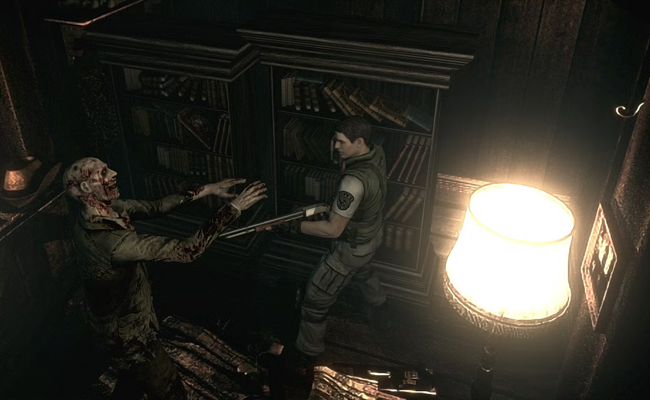

Gaming
Horror has become one of gaming's most distinctive genres. Leaning on atmosphere, monster imagery and, in its earlier titles, limited graphical capabilities, horror videogames create tension and fear through suggestion rather than spectacle. Interactivity can make players feel terror in a way that movies and books cannot.
The turning point for horror videogames was the blend of exploration, puzzle solving and survival mechanics, turning it into the most recognizable horror formula, identified by techniques such as fixed perspectives, scarce resources and the constant sense of player vulnerability. Resident Evil was the franchise that most transformed the genre into a mainstream success by combining its cinematic presentation with dread.

Screenshot of Resident Evil: Remake
The late 1990s and early 2000s saw an expansion into style and ambition. Franchises such as Silent Hill leaned into psychological horror, symbolism and atmosphere, using fog and sound design to create fear that felt more emotional. Other landmark titles like Fatal Frame, System Shock and Doom branched into the supernatural, sci-fi and action-heavy forms while retaining its unsettling nature.
As mainstream franchises pushed for graphical fidelity and action, the rise of indie gaming continued to prove that horror could still thrive on atmosphere and clever design, with massive hits in the 2010's such as Amnesia and Five Nights at Freddy's.
What makes horror videogames such an increasingly popular medium and so enduring is the ability to put the player inside the fear instead of simply showing or describing it, turning every detail into something active and personal, and making the players themselves feel exposed, uncertain and unsafe.
Source: